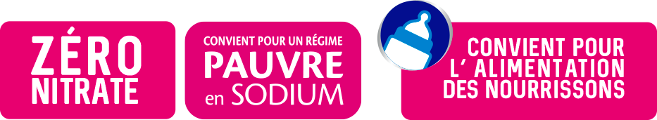

ZERO NITRATE
ZERO NITRATE
 PAUVRE EN SODIUM
PAUVRE EN SODIUM
 CONVIENT POUR LES
NOURRISSONS
CONVIENT POUR LES
NOURRISSONS
 OUVERTURE FACILE
OUVERTURE FACILE
Zéro nitrate, Pauvre en sodium et faiblement minéralisée l'eau minérale naturelle de Wattwiller peut être consommée au quotidienet à tout âge, y compris par les personnes les plus fragiles.

L'eau minérale naturelle de Wattwiller détient l'une des plus faibles teneur en sodium du marché
Tout commence ici. C’est au cœur du Parc Naturel Régional des Ballons des Vosges sur un Site Natura 2000, que l’eau minérale de Wattwiller prend sa source. Cirques glaciaires, lacs, hautes-chaumes et forêts, s’entremêlent ici dans une rare harmonie. À lui seul, le massif forestier couvre les deux tiers de ce territoire préservé. Partez à la découverte de cette nature préservée en empruntant le Sentier Permanent de Wattwiller.
DÉCOUVRIR LE SENTIER PERMANENT WATTWILLER
Depuis les sommets des Vosges, les eaux s’infiltrent lentement sous terre par les fissures de la roche. Commence alors un voyage souterrain de plusieurs centaines d’années qui offre à l’eau minérale naturelle de Wattwiller sa pureté originelle préservée. En effet trois facteurs combinés (une épaisse couche d’argile, une source artésienne, une profondeur de captage à 150 m sous terre) constituent de véritables boucliers naturels contre les atteintes extérieures.

Grâce à sa pureté originelle reconnue par l’Académie de Médecine, l’eau minérale naturelle de Wattwiller est recommandée pour l’alimentation des nourrissons.
et cumulez vos achats pour profiter de lots exceptionnels toute l'année
Zéro nitrate, Pauvre en sodium et faiblement minéralisée l'eau minérale naturelle de Wattwiller peut être consommée au quotidienet à tout âge, y compris par les personnes les plus fragiles.

Plusieurs études dévoilent aujourd’hui qu’une consommation de sel trop élevée induit systématiquement une augmentation de la pression artérielle et peut, à terme, entraîner des troubles cardiovasculaires.
Wattwiller s’engage aux côtés de la FRHTA pour une baisse de la consommation de sel en France.

Les bulles fines de Wattwiller sont idéales au repas ou pour accompagner les pauses de la journée. Particulièrement pure, elle se distingue parmi les eaux les plus pauvres en sodium du marché.
Produits disponibles :
Format 1 LLes bulles fines de Wattwiller sont idéales au repas ou pour accompagner les pauses de la journée. Particulièrement pure, elle se distingue parmi les eaux les plus pauvres en sodium du marché.
Produits disponibles :
Format 1 LLes bulles fines de Wattwiller sont idéales au repas ou pour accompagner les pauses de la journée. Particulièrement pure, elle se distingue parmi les eaux les plus pauvres en sodium du marché.
Produits disponibles :
Format 1 L